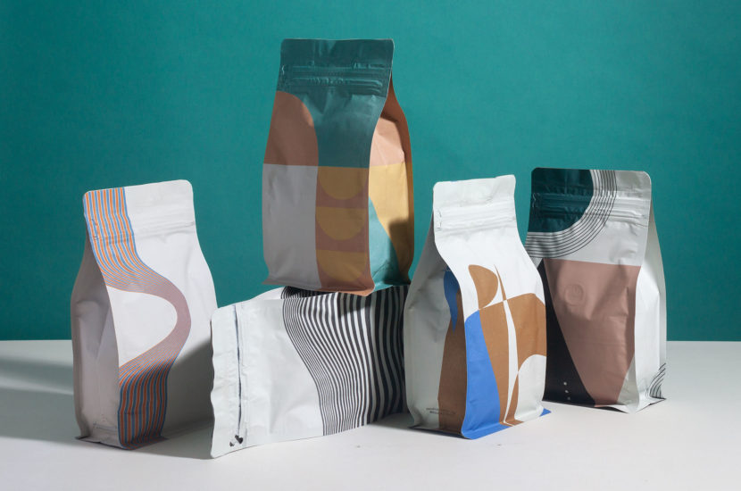

Coffee design, again
Jul 3, 2019
17
I got the idea to have a series of bags from the fashion and beer world. An apparel designer will often pick one fabric and make a series of silhouettes, or they might pick one silhouette and make it with a handful of different fabrics. In a similar way, a brewery will release a different design with each of their styles of beer. I wanted to do the same thing with coffee bags. Essentially, I wanted to create a collection that would look really good displayed together as a set.